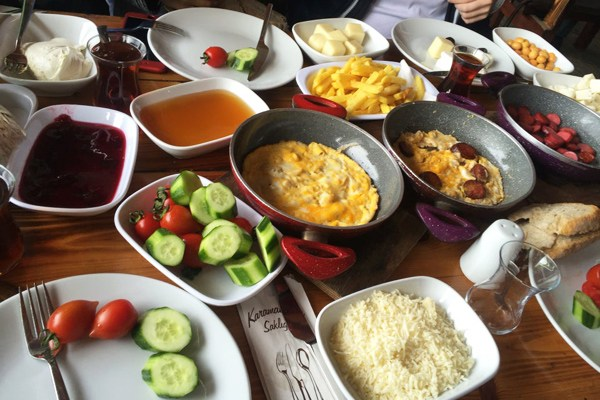

SAKLIGÖL Doğanın ve Lezzetin Adresi

Hakkımızda
|
| Şile Kamandere Köyü sınırları içerisinde bulunan Saklı Göl, yapay bir baraj gölü. Doğası ve hemen yanı başındaki işletmesi ile birçok İstanbullu için hafta sonu nefes alabilmek adına tercih edilen bu güzel köşe, yürüyüşten ve güzel bir kahvaltıdan keyif alabilecek birçok doğa severin sırlarından birisi. Göle ulaşmak için girilen yolda köylülerin açmış olduğu ve doğal ürünlerin yer aldığı tezgahlar ve küçük gözleme durakları ise tüm gününü burada geçirip biraz alışveriş yapmak isteyenler için de güzel bir sürpriz olacaktır. |
Saklıgöl'de Ne Yapılır ?
|
|
Göl kenarındaki işletmemizde göl kıyısında eşsiz bir manzaraya karşı demlik çayınızla birlikte kahvaltınızı yapabilirsiniz. Arzu edenler içinse hemen bu alanın yanı başında yine göl kenarında yer alan masalarda kendin pişir kendin ye mangal ya da piknik yapabilmek de mümkün. İşletmeden isteseniz masa ücreti ödeyerek kendi yiyecek ve içeceklerinizi getirebilirsiniz. Ayrıca mangal da kiralayabiliyorsunuz.
|